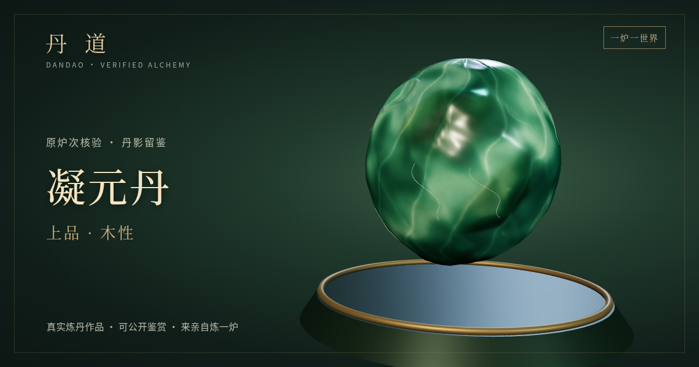

W148 · REAL PRODUCTION PILL · GPU VS SANDBOX SOFTWARE WEBGL
同一枚真丹。
不换画面，只换渲染的算力。
这两张不是模拟图。它们从正式《丹道》PostgreSQL签发、已经自然八刻炼成的同一枚上品凝元丹读取真实外观种子，分别由生产机沙箱Chrome软件WebGL和Z890真正RTX5070Ti生成。测试完成后作者已撤销临时丹鉴，经济账本保持不变。
19.5×GPU的真实WebGL成像速度比
1.10 /255两张图像RGB全图逐通道平均差异
0.94%任意颜色通道差异超过20的像素比例
工程边界：云端已实际启用的是匿名分段计时，Z890 GPU图片只是同一原丹的受控A/B测量，并未启用跨设备生产自动渲染。正式W146主游戏保持不变，云端仍有安全沙箱CPU回退。两个渲染器采用不同光栅实现，PNG字节不完全相同。


真正测出来的耗时，而不是估计
17.32 秒
0.89 秒
只比较相同真实Three.js场景的WebGL就绪阶段。云端完整浏览器执行23.65秒；Z890浏览器启动、跨网络加载正式网页、绘制、PNG编码合计5.39秒，其中导航占4.19秒。计时均为本次独立真实样本，不承诺固定性能。
相同原丹，画面到底差多少？
逐像素采用RGB三通道绝对差，完整1200×630平均约1.097/255；中心丹丸350×500区域仅0.327/255。两者均是服务器真丹所决定的几何、颜色、品阶及药气效果，不通过删掉丹皮细节来换帧率。
允许不同GPU/CPU驱动产生轻微抗锯齿、着色和字体边缘差异。真正的生产跨设备工作器还需做授权任务签名、PNG校验、撤销原子性验证和离线回退。只有这些都完成后才会自动启用。